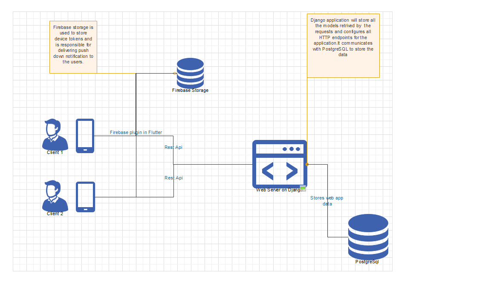

Architecture diagram
Django Server
Django is a high-level Python Web framework that encourages rapid development and clean,
pragmatic design.
The main django application is composed by 2 apps . First application is jwauth - a third
party app that helps with authentication- and
the second application is named monitor - organizes the ORM and the business logic for the
front-end app.
Urls.py module in the monitor app is responsible with mapping the urls and views.py are
meant to provide the logic for the
requests.
Models.py module gives a reflection of the database viewed in python language.
Flutter Front End Application (named Moodle)
The application is used for making http requests to the server and displaying data to the
user. The location sensor is used to identify user location. The app comunicates with Firebase
so when a new Notification is added, the cloud function will notify the other users.
